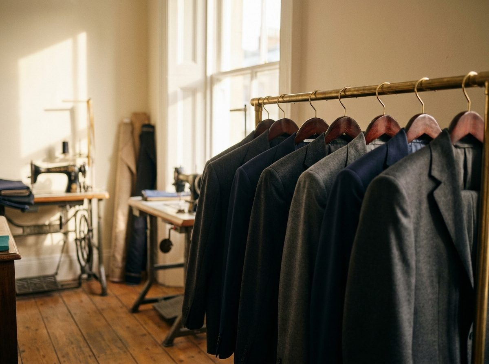
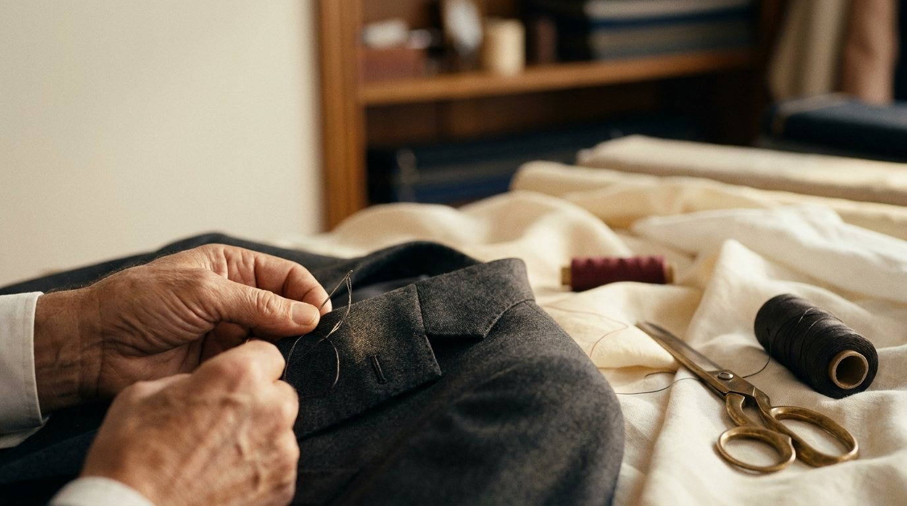
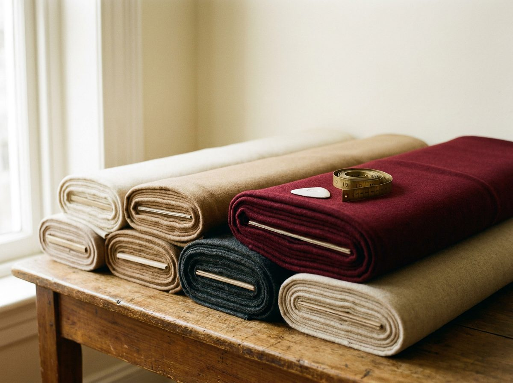
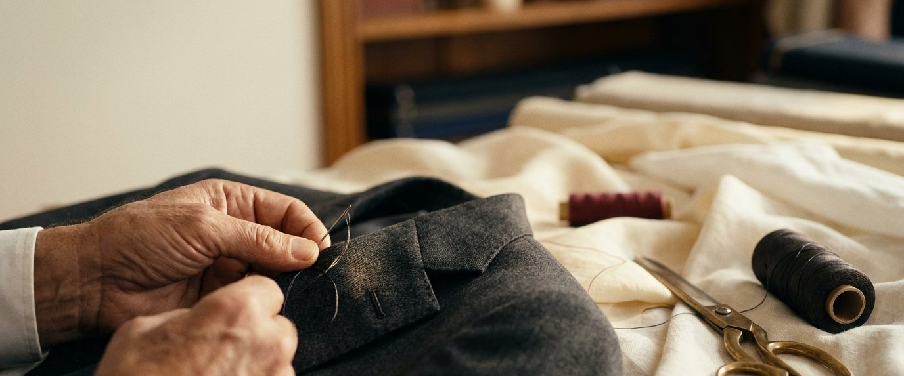

Custom suits cut to your measure, alterations done with precision, and formalwear finished by a master's hand. Forty-five years of craft, tucked just off Research Boulevard.
Continental Bespoke Tailors is the work of Vasile "Vas" Hotnog — a Romanian master tailor who has spent forty-five years turning fine cloth into garments that look made for the person wearing them. Clients call him a lost gem: an artist who does everything so precisely you'd never know a stitch was touched.
Every suit, every alteration, and every hem passes through his hands alone. No assembly line, no shortcuts — just a quiet Austin atelier where craft still takes the time it deserves.

A suit built to your measurements from the cloth up. Choose from Zegna, Loro Piana, Baroni Super 150s and more, then let Vas cut, canvas and hand-finish a jacket that sits the way it should. Custom made-to-measure suiting, tuxedos and top coats.
Taper, take in, let out, hem and reshape — precise alterations for suits, trousers, shirts and jackets. Simple alterations are often finished within a day, and everything comes back looking as though it was cut that way.
The day everything has to be perfect. Groom and groomsmen suiting, tuxedo fittings, and dress and formalwear alterations — fitted, pressed and ready well before the aisle. Bring the whole party in.
Off-the-rack suits, tuxedos, prom suiting and top coats on the floor — then tailored in-house to fit you exactly. A curated selection of quality menswear with the alterations built right in.



Machines are quick. Hands are exact. At Continental, the finishing that decides how a garment falls is still done by a master's hand — the difference you feel the moment you put it on.
A suit is only as good as the cloth it starts from. Continental works in the fabrics the finest houses in the world are known for — chosen for hand, drape and how they wear over the years.
This man is a true custom tailor and does outstanding work. He does everything so precisely you'd never know it was altered in any way — a one-of-a-kind tailor who's more of an artist in his own right.
An amazing gentleman from Romania — literally a lost gem in this day and age. A little hidden shop off 183, and worth every mile of the drive.
The owner is genuinely kind and completes simple alterations within a day. Fast, friendly and done right the first time.
Tapered my pants in three days — precise work, quick turnaround, exactly what I asked for. I won't take my suits anywhere else.
Fittings and consultations are by appointment — a quick call is the best way to start. You'll find Continental just off Research Boulevard (Hwy 183) in north Austin.
Because it will be. Bring in a suit that needs saving, or start one from the cloth up — either way, you're in a master's hands.